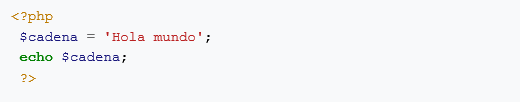
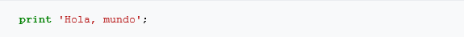
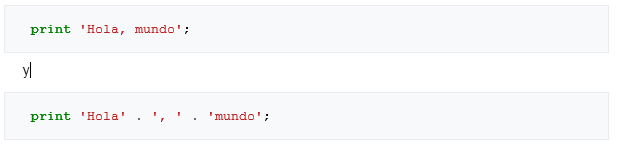
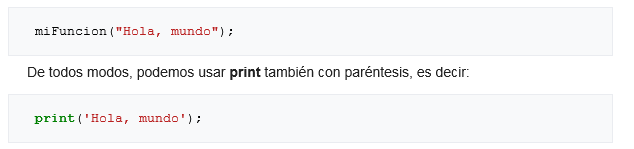

Codigo

Analisis
Esto es un código muy sencillo. Simplemente guarda la cadena de caracteres o string 'Hola mundo' en la variable $cadena y después se imprime por pantalla con el comando echo.
INICIO DE UN SCRIPT
EN PHP
El ?php inicial indica que lo que sigue debería ser interpretado por PHP (por el intérprete de PHP), lo que significa que es parte del programa y no del HTML. Al final del documento, o cuando pasamos de nuevo a código HTML, se pone un ?> para indicar a PHP que ignore lo que venga a continuación. La etiqueta de cierre del código en PHP lleva implícito un ' ; '.
VARIABLES
Las variables son la base de cualquier lenguaje de programación. Sin ellas, no podríamos guardar información para utilizarla más adelante. PHP no sería capaz de hacer nada dinámico. Vemos que las variables son necesarias y PHP las tiene.
Si tienes experiencia con otros lenguajes de programación, sabes que en algunos de ellos es necesario declarar el tipo que va a tener una variable, es decir, el tipo de datos que será capaz de guardar. Son los lenguajes fuertemente tipados y en ellos necesitas saber el tipo de una variable antes de guardar cualquier cosa en ella. Son de este tipo lenguajes tan conocidos como C++ y Java. PHP, por otra parte, es un lenguaje débilmente tipado, porque el tipo de la variable corresponde al tipo del valor que está guardando en este momento. Puedes crear una variable para guardar una cadena de caracteres (string), asignar a esa variable un string, reemplazarlo luego por un número, y no habría problemas. Sin embargo, en C++ habría que haber hecho un cast (conversión explícita de tipos) o guardar ese número en otra variable distinta (del tipo correcto).
Todas las variables en PHP empiezan por '$' seguido de un identificador. Se diferencia entre mayúsculas y minúsculas, por lo que $wiki es diferente de $Wiki.
PRINT
La función print es clave para la salida de datos. Manda cualquier cosa que pongamos entre las comillas (o paréntesis) que siguen a print a la salida (la ventana del navegador). Una función similar podría ser como echo, pero print permite al programador saber si la salida se ha realizado correctamente o no.
Un ejemplo de uso del print con comillas sería:

Al texto entre comillas se le trata como si fuera un string, por lo que podemos hacer uso de la concatenación (unir dos strings en uno). Por ejemplo:

Los puntos entre medias de las cadenas de caracteres o strings son el operador de concatenación. Los ejemplos anteriores tendrían el mismo efecto pues, en la segunda versión, los 3 strings se unen en uno solo antes de salir por pantalla.
La forma del comando print es una de las menos comunes. Print no es una función, sino una construcción interna. Las funciones, como veremos, tienen sus argumentos entre paréntesis.

De cara a la optimización de código, cabe destacar, que se deben utilizar comillas simples ( ' ), siempre que no vayas a devolver variables, pues con el uso de la doble comilla ( " ), el compilador debe analizar todo el contenido en busca de variables.
Es interesante hacer notar que echo se utiliza exactamente igual, por lo que si sustituimos en los ejemplos anteriores print por echo tendremos el mismo resultado.
EL PUNTO Y COMA Y LOS ESPACIOS
Otra parte imprescindible para este lenguaje, no así en otros como JavaScript o ActionScript, es finalizar cada comando con un punto y coma (";"). Sin él, el intérprete de PHP nos devolverá un error crítico y ni siquiera iniciará la ejecución del script.
Sin embargo PHP ignora completamente los espacios en blanco y los saltos de línea (salvo en las definiciones de cadenas). Esto quiere decir que tanto podemos poner todo un script en una línea como sangrar cada línea tanto como queramos o dejar varias líneas en blanco.